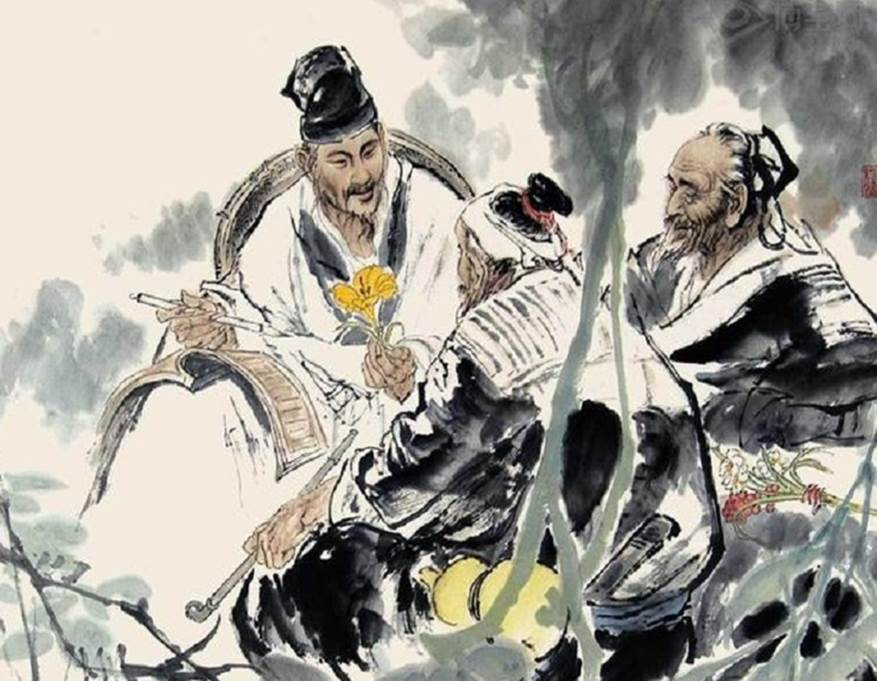
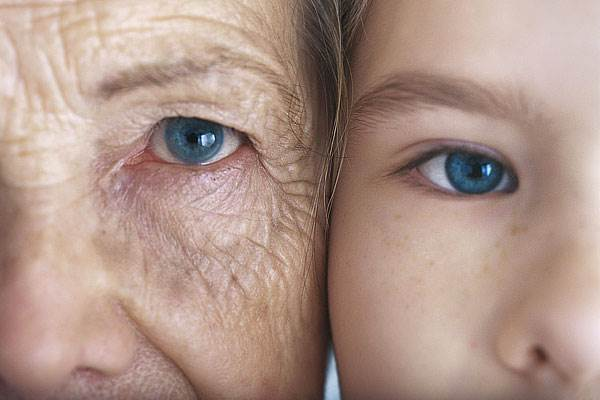
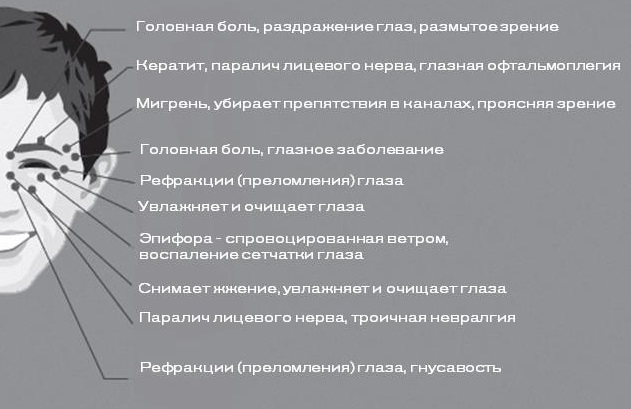
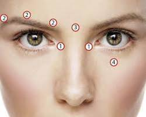
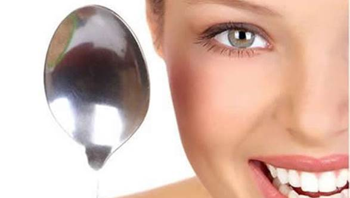
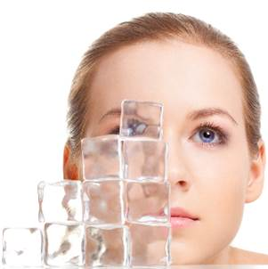
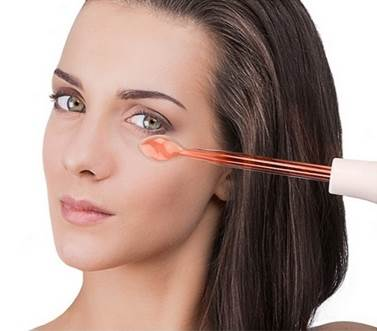

О массаже для глаз
Регулярный массаж глаз – эффективное, простое и доступное средство предупреждения первых морщин, зрительного утомления, повышения работоспособности и профилактики нарушений зрения.
Еще в древности китайские медики рекомендовали для предупреждения усталости глаз и при ослаблении зрения проводить систематические потирания глаз. Более того, они считали, что существует определенная связь между глазами и почками, глазами и печенью. Причем не только состояние внутренних органов влияет на глаза (например, отечные мешки под глазами у почечных больных или желтые склеры пациентов с запущенными заболеваниями печени), но и состояние глаз влияет на эти органы.
Причины появления первых морщин могут быть разные. Основными являются: привычка морщить лоб или щурить глаза, опускать уголки губ, наследственность, стрессовые ситуации. Довольно часто бурные эмоции, положительные или отрицательные, становятся причиной возникновения мимических морщин.
Как бороться с такой проблемой, как преждевременное увядание кожи? Как сохранить ее нежность, упругость, эластичность?
О пользе массажа глаз
Массаж глаз способствует пробуждению.
Если во время утреннего умывания регулярно растирать лоб, приподнимать брови и моргать, то в области глаз и слезных каналов усиливается кровоток, взгляд становится ясным, глаза быстрее просыпаются и человек становится бодрее.
Массаж глаз не только активизирует обмен в тканях.
Улучшает кровообращение, снимает избыточное напряжение с глазных мышц, восстанавливая их работоспособность.
Особенно актуально стало использование массажа глаз при длительной работе за компьютером.
Акупунктурные точки
Виды массажа
Точечный массаж век
Снять отечность и усталость с глаз можно с помощью точечного массажа. Точки для массажа глаз расположены в области виска, по краю нижнего века, во внутреннем уголке глаза и по краю верхнего века.
Массаж ложками
Точечный массаж можно сделать более эффективным, если проводить его с помощью горячих ложек. Нагретыми ложками надавливают на массажные точки, двигаясь по массажным линиям. Особенно эффективен массаж ложками в борьбе с гусиными лапками и мелкими морщинами под глазами.
Криомассаж
Для тех, кто желает попробовать что-то новенькое, в некоторых салонах предлагают услугу – криомассаж лица. Суть заключается в том, что по массажным линиям прокатывается валик с жидким азотом. Под воздействием очень низкой температуры сосуды сокращаются и быстро расширяются. Такая процедура улучшает кровоснабжение, мимические морщины сглаживаются, а кожа начинает дышать.
Импульсный массаж
В современных салонах вам также могут предложить пройти импульсный массаж лица с помощью массажера Дарсонваль. На поверхность кожи действует микроток. Под воздействие импульса в проблемной зоне улучшается кровоток и улучшается приток лимфы, что избавляет от темных кругов под глазами и устраняет морщины.